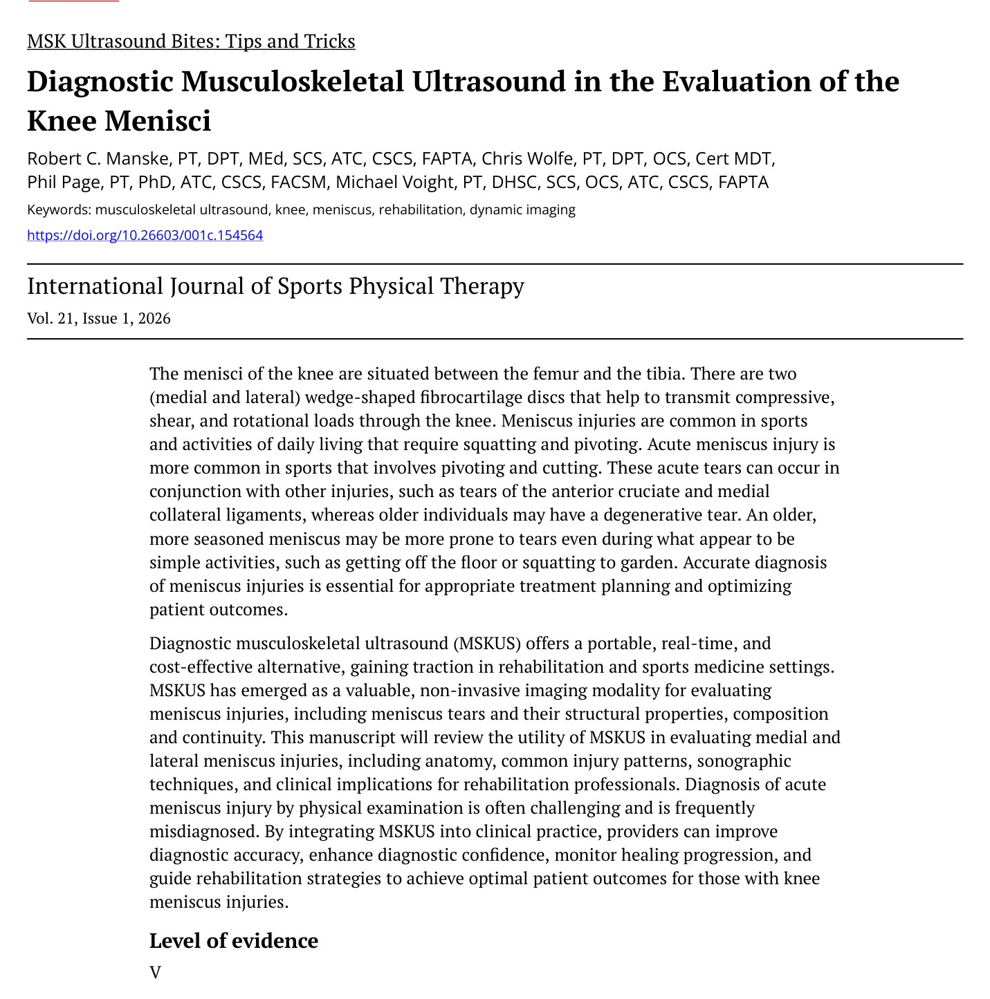
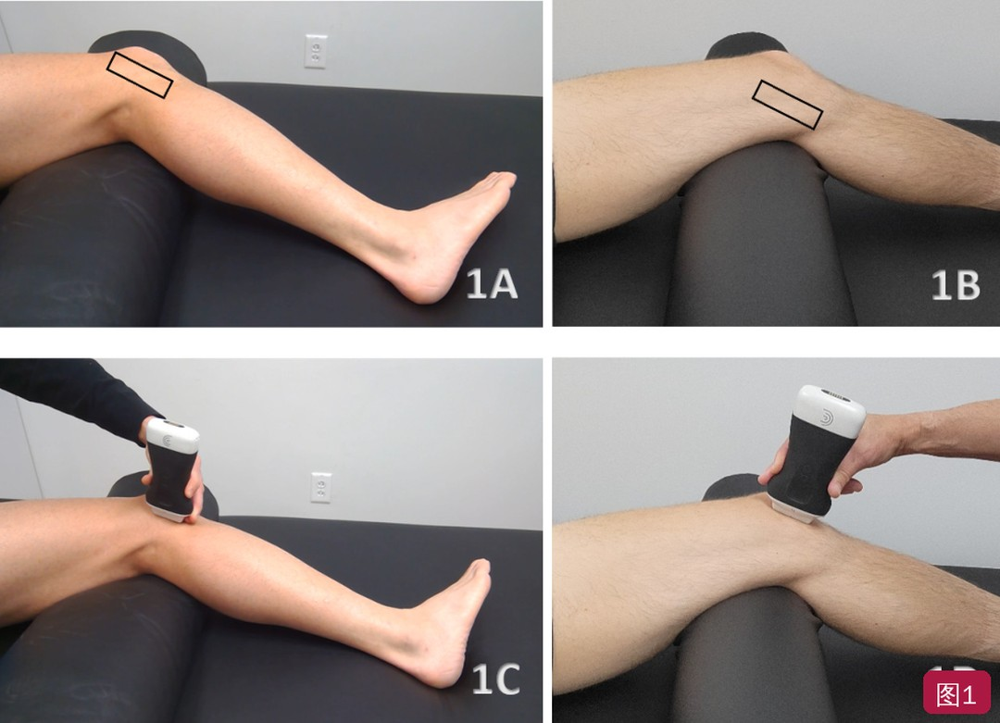
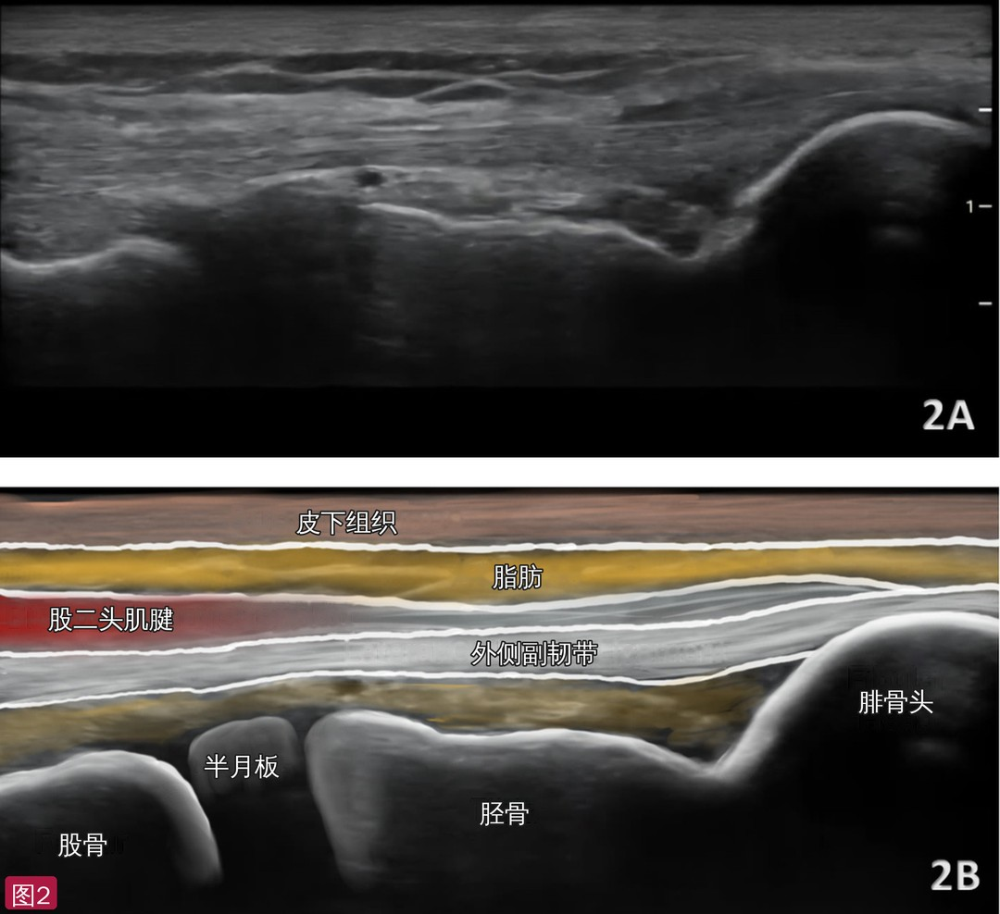
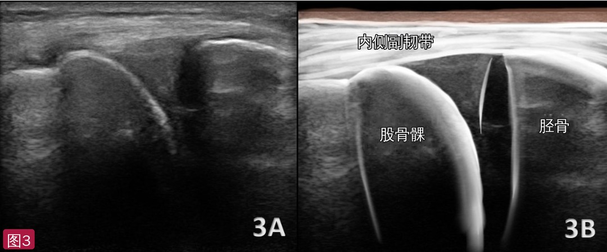
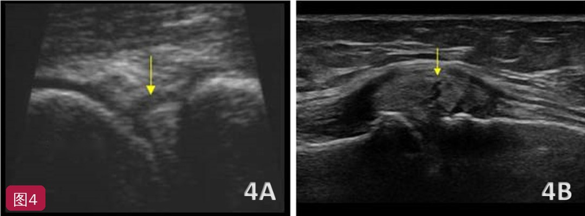
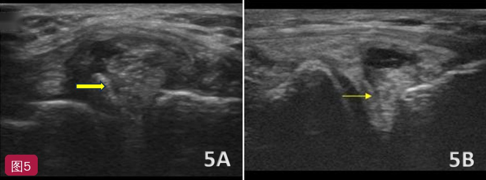

🔖原文首页（IJSPT 2026 年第 21 卷第 1 期，“肌骨超声小贴士”栏目）
📚 文献卡片
▪ 英文原题：Diagnostic Musculoskeletal Ultrasound in the Evaluation of the Knee Menisci（诊断性肌骨超声评估膝关节半月板）
▪ 作者：Robert C. Manske, PT, DPT · Chris Wolfe, PT, DPT · Phil Page, PT, PhD · Michael Voight, PT, DHSc
▪ 栏目：MSK Ultrasound Bites: Tips and Tricks（肌骨超声小贴士）
▪ 期刊：International Journal of Sports Physical Therapy（IJSPT）
▪ 年卷期：2026;21(1):108-114
▪ PMCID：PMC12758935
▪ 证据级别：5 级
▪ 关键词：musculoskeletal ultrasound · knee · meniscus · rehabilitation · dynamic imaging
半月板是位于股骨和胫骨之间的两块楔形纤维软骨盘（内侧、外侧），帮助传递压缩、剪切和旋转负荷，并参与关节润滑和营养分布。胫骨平台表面较浅，半月板把它变成更深的凹面来容纳股骨髁——外侧尤其重要，因为外侧胫骨平台更平，甚至略凸。
半月板撕裂会削弱膝关节的减震能力、增加关节机械应力，长期可能促进关节退变。急性撕裂多见于需要转身、切步的运动，常合并前交叉韧带、内侧副韧带损伤；年龄较大者更多是退变性撕裂，从地上站起来、蹲下种花这类简单动作就可能撕裂。急性半月板损伤单靠查体常常难以确诊，误诊多见。
诊断性肌骨超声（MSKUS）便携、实时、便宜，在康复和运动医学中越来越常用。本文介绍用超声评估内、外侧半月板的解剖、常见损伤、扫查技术和对康复的意义。
| 项目 | 要点 |
|---|---|
| 探头 | 高频线阵探头（半月板外缘位置表浅） |
| 体位 | 仰卧，膝下垫小枕屈膝约 20°～30°：外侧半月板小腿内旋，内侧半月板小腿外旋 |
| 切面 | 沿关节线长轴（LAX）放置，从前向后扫查前角、体部、后角 |
| 正常表现 | 股骨与胫骨（高回声骨面）之间、边界清楚、回声均匀的三角形结构 |
| 撕裂征象 | 低回声/无回声裂隙、轮廓不规则或截断、半月板突出（超出胫骨缘）、关节线积液、半月板旁囊肿 |
| 动态评估 | 内翻/外翻应力、屈伸活动、负重与非负重下观察 |
| 主要局限 | 依赖操作者；只能看清外周缘，深部撕裂可能漏诊；MRI 仍是参考标准 |
一句话概括：超声看半月板外周缘快、便宜、可动态，适合作为一线工具；看不清深部时仍需 MRI。
• 无创：即时超声可用于半月板等多种膝关节软组织病变
• 实时、动态：可在负重和非负重下观察内、外侧半月板，可以边加载、边在可用活动范围内活动膝关节，动态看到半月板移位
• 分辨率高：能清楚显示沿胫股关节线分布的内、外侧半月板外缘
• 准确性：超声诊断半月板撕裂的敏感度和特异度最高可达 88% 和 85%；内侧半月板撕裂的敏感度为 83%～97.2%，特异度为 83%～100%
• 可及、省钱：便携、普及，比 MRI 便宜
• 依赖操作者：判读需要技术和经验，也受设备条件影响
• 深度受限：外周缘通常看得清，深部结构看不清——深部撕裂可能漏诊，而它们有时更有临床意义、症状更明显
• 伪像和声影：骨和钙化会产生伪像，需要调整探头位置和频率
患者仰卧，膝下垫小枕，屈膝约 20°～30°。这个体位放松股四头肌、打开关节间隙，为内、外侧半月板提供良好的声窗。
• 外侧半月板（图 1A、1C）：小腿内旋暴露外侧关节线；先摸到腓骨头，探头长轴放在其正上方，再向前移，直到在外侧副韧带深面、腘肌腱旁看到外侧半月板。外侧半月板位置更深、弧度更大，需要轻微地前后翘动探头（足跟-足尖摆动）减少各向异性、看清软骨-骨界面
• 内侧半月板（图 1B、1D）：足和小腿外旋暴露内侧关节线；从膝内侧后方开始，长轴沿内侧关节线放置，向前轻扫，直到在内侧副韧带（MCL）深面看到三角形的纤维软骨楔；MCL 位于半月板体部浅层，常需轻微倾斜探头
• 动态评估：轻施外翻应力更好地显示内侧半月板，内翻应力打开外侧关节线；也可做屈伸活动

🔖图1：体位与探头放置。1A 外侧半月板，小腿内旋；1B 内侧半月板，足和小腿外旋（黑框示探头位置）；1C 外侧半月板，探头置于腓骨头上方，长轴放置；1D 内侧半月板，探头沿内侧关节线长轴放置
• 完整扫查要从前向后系统移动探头，依次看前角、体部、后角；全程轻轻摆动探头，避免各向异性造成貌似病变的假性低回声区
• 注意半月板和周围韧带的关系：内侧看MCL，外侧看外侧副韧带-腘肌腱界面
• 借助邻近软组织定位：内侧有鹅足和半膜肌腱，外侧有股二头肌和髂胫束；外侧血管结构较少，不容易把血管搏动误当成半月板病变
• 外侧半月板：呈三角形，但通常比内侧更深、更弯，位于外侧副韧带和腘肌腱深面，需要仔细调整角度；轻施内翻应力可见其活动度比内侧大
• 内侧半月板：位于股骨内髁和胫骨平台之间，回声均匀、中等偏高回声的三角形，上下缘光滑清楚

🔖图2：外侧半月板长轴切面。2A 原始超声图；2B 标注图：浅层依次为皮下组织、脂肪、股二头肌腱和外侧副韧带，深面可见股骨、半月板、胫骨和腓骨头（解剖标注已改为中文）

🔖图3：内侧半月板长轴切面。3A 原始超声图；3B 标注图：内侧副韧带深面，股骨髁与胫骨之间的三角形结构即内侧半月板（解剖标注已改为中文）
• 正常均匀的楔形结构被破坏，最常见的是纤维软骨内局灶性低回声或无回声裂隙
• 随探头方向和扫查平面不同，可识别垂直、水平、瓣状或放射状撕裂
• 以下附加征象能提高诊断信心：半月板表面不规则或截断、半月板突出超出胫骨边缘、低回声裂隙延伸到关节面、关节线积液或滑膜增厚
• 半月板旁囊肿：与撕裂相连的充液囊性肿物，多见于内侧，源自退变性撕裂，可表现为关节线处的软组织肿胀；超声上常为紧贴半月板体部的薄壁无回声囊肿，有时可见液性裂隙从囊肿延伸到撕裂处
内侧半月板位置浅、与关节囊和 MCL 连接牢固，撕裂通常更容易显示：三角形轮廓消失、体部出现低回声/无回声裂隙（图 4A），以及超出胫骨内侧缘的突出（图 4B）。关节线积液、关节囊增厚或邻近 MCL 受累也常见，尤其是退变性或慢性病例。

🔖图4：内侧半月板撕裂。4A 黄色箭头示半月板体内的低回声裂隙；4B 黄色箭头示撕裂处，半月板向胫骨内侧缘外突出（超声机英文注记已去除）
外侧半月板位置更深，上面还有外侧副韧带和腘肌腱，撕裂在超声上可能更隐蔽：表现为低回声缺损、边缘不规则或三角形楔形结构变形。其他征象包括半月板与腘肌腱的接触异常、关节线旁的小移位碎片或游离体，以及常与外侧撕裂相关的半月板旁囊肿。关节线积液可以勾勒出撕裂平面；轻施内翻或外翻应力能突出半月板突出或显示撕裂部分的不稳定。

🔖图5：外侧半月板撕裂。5A、5B 黄色箭头示外侧半月板撕裂处（超声机英文注记已去除）
• 早期发现、准确分级：快速区分半月板撕裂、积液或半月板突出，指导治疗计划
• 动态功能测试：在负重活动或非负重活动范围内观察功能动作对半月板的影响
• 引导介入：超声引导下精准注射（如糖皮质激素抗炎）
• 患者教育：实时图像直观解释损伤，帮助患者建立合理的恢复预期
由于深部结构显示有限，MRI 仍可能是首选影像；但超声能很快、低成本地评估半月板，很多情况下能看到病变，可作为急性和慢性情况下的一线工具，也可用于监测愈合和康复进展。
• 证据级别低：5 级、简短的技术栏目文章，没有原始数据；文中的诊断准确性数字只引用了文献，未说明研究人群、参考标准和撕裂类型
• 亮点：体位、探头放置、正常解剖标志和撕裂征象一目了然，配有标注图，适合康复人员入门
• 体位描述前后不一致：前文“检查方案”写外侧半月板为侧卧、双膝间垫枕施加内翻应力、探头放在腘窝横纹处（后外侧），内侧半月板探头放在后内侧；后文图 1 部分则写仰卧屈膝 20°～30°、小腿内旋、探头放在腓骨头上方——两种方法都可用，但原文没有说明怎样取舍
• 图文对应不足：小节标题写“撕裂与囊肿形成”，但图 4、图 5 没有展示囊肿；图 5A、5B 没有单独的图注说明各自显示什么；图 2 标注里没有标出正文强调的腘肌腱
• “提高诊断准确性”的说法需谨慎：作者也承认超声看不清深部撕裂、MRI 仍是参考标准，超声更适合作为补充和筛查
• 小瑕疵：“sports that involves”应为 involve；外侧体位一句“opens with the posterolateral joint line”语法不通
① 探头：高频线阵，沿关节线长轴放置
② 体位：仰卧屈膝 20°～30°；看外侧小腿内旋、看内侧小腿外旋
③ 定位：外侧从腓骨头上方找，在外侧副韧带、腘肌腱深面；内侧在 MCL 深面
④ 正常：股骨、胫骨之间回声均匀的三角形；前角、体部、后角都要扫到
⑤ 异常：低/无回声裂隙、轮廓截断、突出超出胫骨缘、积液、半月板旁囊肿
⑥ 技巧：摆动探头避开各向异性；加内翻/外翻应力动态观察
★ 局限：只看得清外周缘，深部撕裂仍需 MRI
欢迎关注悦美力公众号，获取更多物理治疗的专业知识！
📄参考文献：
Manske RC, Wolfe C, Page P, Voight M. Diagnostic Musculoskeletal Ultrasound in the Evaluation of the Knee Menisci. Int J Sports Phys Ther. 2026;21(1):108-114. PMCID: PMC12758935.
文中 5 张图片均来自原文：图 2B、3B 解剖标注已改为中文，图 4A、5A 超声机英文注记已去除；核心要点表为编者整理，仅用于学术交流。